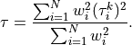
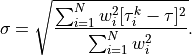
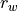

FixedHypocenter¶
Locator for re-computing source time with fixed hypocenter
Description¶
Mining-related events are useful as ground truth events (Bondár and McLaughlin [31]) because the epicentre and depth can be constrained by physical inspection. Unless a local seismograph network with accurate timing also locates the event, and that information is available, the origin time must be estimated in order for the event to be useful as ground truth. Existing location algorithms in SeisComP, including Hypo71 and LOCSAT do not allow the determination of origin time given a set of arrivals and a fixed hypocentre. There is a need, then, for a method of fixed hypocentre origin time determination.
Objectives of this locator are:
Inversion of arrival times of phase picks for source time fixing hypocenter location.
Compatibility of the method of fixed-hypocentre origin time determination with the practise of the Comprehensive Test Ban Treaty Organization (CTBTO).
Adaptation of a procedure which is compatible with the other locators supported by SeisComP.
Adaptation of a procedure which can reproduce results of legacy locators currently in use, such as GENLOC Pavlis et al. [52] and GRL, a grid-based locator developed at the Canadian Hazards Information Service (CHIS).
The implementation of this locator by gempa GmbH was initiated and has received initial funding from Natural Resources Canada (NRCAN), Earthquakes Canada [16].
Methodology¶
Given the measured arrival times of phase  at
station
at
station  , most methods of earthquake hypocentre location involve
minimization of the weighted squared sum of the residuals. That is,
minimization of:
, most methods of earthquake hypocentre location involve
minimization of the weighted squared sum of the residuals. That is,
minimization of:
The residuals are computed by subtracting the expected arrival times
based on a velocity model applied at the
coordinates of each station
 .
.
Typically the weights can be a combination of the inverse of the estimated pick uncertainty , a distance term and/or a residual weight term . Alternative weighting schemes can be applied but in this implementation we weight by pick uncertainty alone: .
In the general case, the model is a nonlinear function of its inputs, and there is no analytic solution for the origin time and hypocenter that minimize the norm. Typically, the solution is found iteratively, based on an initial guess for the origin time and hypocenter. This is the normal procedure for an earthquake without an a priori estimate of the hypocentral location. When the hypocenter is in fact accurately constrained, the modeled travel time is a constant, so we can project each phase arrival back to an equivalent origin time
so that we only have to find which minimizes:
The residuals are minimized by:

Thus, the origin time is simply the weighted mean of the equivalent origin times, according to the velocity model, associated with the arrivals.
The standard error of this estimate is:

The methodology for estimating error intervals and ellipses recommended for standard processing at the CTBTO (Lee and Lahr [48]) is that of Jordan and Sverdrup [44] and is implemented in LOCSAT (Bratt and Bache [38]). Uncertainty is represented by a set of points around the final estimate satisfying:
where:
: Covariance matrix, corresponding to the final hypocentre estimate .
: Ratio of actual to assumed.
: The “confidence coefficient” at probability
 .
.: Fisher-Snedecor quantile function (inverse cumulative F-distribution) for and degrees of freedom of numerator and denominator sum of squares, respectively, and probability.
 : Confidence level: the desired probability that the true epicentre should
fall within the uncertainty bounds.
: Confidence level: the desired probability that the true epicentre should
fall within the uncertainty bounds. : Sum of all arrival time, azimuth or slowness estimates. Here, only
arrival times are considered for inversion.
: Sum of all arrival time, azimuth or slowness estimates. Here, only
arrival times are considered for inversion. : Number of fitted parameters:
: Number of fitted parameters:3: error ellipsoid
2: error ellipse
1: depth or time error bounds.
Here, as we only invert for the time.
: A prior estimate of the ratio of actual to assumed data variances; typically set to 1.
 : Number of degrees of freedom in prior estimate .
can be configured by
: Number of degrees of freedom in prior estimate .
can be configured by FixedHypocenter.degreesOfFreedom.: Vector of weighted residuals.
Although this formulation is complex it is useful it because allows the analyst to balance a priori and a posteriori estimates of the ratio of actual to assumed data variances.
The covariance matrix in the general case is computed from the weighted sensitivity matrix , the row-weighted matrix of partial derivatives of arrival time with respect to the solution coordinates.
However, when origin time is the only coordinate, the partial derivatives with respect to origin time are unity, the weighted sensitivity matrix is simply a row vector of weights, and the time-time covariance is simply the sum of the squares of these weights.
It is recommended that fixed-hypocentre origin time confidence intervals be estimated using the method of Jordan and Sverdrup [44] for error ellipsoids, that is, that the time error bounds be represented using
In addition to recording arrival weights and residuals, distances and azimuths, and other details of origin quality, the details of a ground-truth-level (GT1) fixed-hypocentre origin time estimate are recorded as:
origin.time =

origin.time_errors.uncertainty =
origin.time_errors.confidence_level =
origin.quality.standard_error =

origin.quality.ground_truth_level = GT1
For the sake of reproducibility, a comment is added to every new origin
reporting , and .
Application¶
Configure the parameters in the section FixedHypocenter of the global configuration.
When using in scolv the FixedHypocenter locator can be chosen right away from the available locators.
scolv Location tab with FixHypocenter selected for relocating.¶
Configure the module, e.g. screloc or scolv, which is to use FixedHypocenter:
set the locator type / interface: “FixedHypocenter”
if requested, set the profile as [interface]/[model], e.g.: LOCSAT/iasp91 or libtau/ak135
Run the module with FixedHypocenter
Origins created by the FixedHypocenter locator can be identified by the methodID and the confidence/description comment of the origin paramters, e.g.:
<origin publicID="Origin/20200102030459.123456.8222"> ... <timeFixed>false</timeFixed> <epicenterFixed>true</epicenterFixed> <methodID>FixedHypocenter</methodID> <earthModelID>iasp91</earthModelID> ... <comment> <text>Confidence coefficient: K-weighted ($K$=8, $s_K$=1 s), $\kappa_p$ = 1.6, $n_{eff}$ = 5.0</text> <id>confidence/description</id> </comment> ... </origin>
Module Configuration¶
Note
FixedHypocenter.* Locator parameters: FixedHypocenter
- FixedHypocenter.profiles¶
Default:
LOCSAT/iasp91,LOCSAT/tabType: list:string
Defines a list of available travel time tables. Each item is a tuple separated by a slash with format "[interface]/[model]". Built-in interfaces are "LOCSAT" and "libtau". Other interfaces might be added via plugins. Please check their documentation for the required interface name.
- FixedHypocenter.usePickUncertainties¶
Default:
falseType: boolean
Whether to use pick time uncertainties rather than a fixed time error. If true, then the uncertainties are retrieved from each individual pick object. If they are not defined, then the default pick time uncertainty as defined by defaultTimeError will be used instead.
- FixedHypocenter.defaultTimeError¶
Default:
1.0Type: double
Unit: s
The default pick time uncertainty if pick uncertainties are not going to be used or if they are absent.
- FixedHypocenter.degreesOfFreedom¶
Default:
8Type: int
Number of degrees of freedom used for error estimate.
- FixedHypocenter.confLevel¶
Default:
0.9Type: double
Confidence level between 0.5 and 1.


{kind=link}